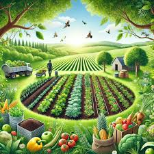
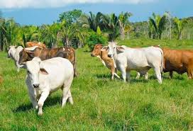
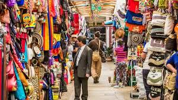

Tipo de clima: Templado y frío de montaña, debido a su altitud de 2.400 metros sobre el nivel del mar.
Temperatura: Promedio de 14°C a 20°C durante el día, y 7°C o menos en la noche.
Precipitaciones: Tiene dos temporadas de lluvias:
- Primavera y verano (abril-noviembre), con más lluvias en mayo y octubre.
- Temporada seca (diciembre-marzo), pero las lluvias nunca desaparecen totalmente.
Humedad: Alta, especialmente debido a las lluvias frecuentes.
Vientos: Moderados, especialmente en las tardes.
Este clima fresco y variable favorece la agricultura de cultivos como maíz y papa, además de hacer de Panqueba un lugar ideal para los amantes del clima de montaña.
Panqueba cuenta con una variedad de especies vegetales adaptadas a su clima y altitud. Entre las especies de árboles nativos se encuentran el mangle, el cucharo, el aliso, el sauce, el cedro, el arrayán, el palo negro, el chilco, el mortiño, el alcaparro, el uvo, el pino romerón colombiano, el hojarasco, el garrocho, el muelle, el mano de oso, el cedrillo, el vara negra y el sietecueros.
Además, en las zonas más altas, es común encontrar frailejones, musgos y líquenes, que son especies adaptadas a climas fríos y húmedos.
La fauna de Panqueba es igualmente diversa y abundante. Entre las aves más destacadas se encuentran el colibrí esmeralda y el churrín andino, conocidos por sus hermosos colores y su capacidad de adaptación a los entornos montañosos.
Además, en los ríos y quebradas de la región, es posible encontrar una variedad de especies acuáticas, como truchas y otros peces autóctonos.
Agricultura: Destacan cultivos de papa, maíz, frijoles, tomate, y hortalizas, que son la base de la producción local. También se cultivan fresas y flores.
Ganadería: La crianza de ganado bovino es importante, especialmente para la producción de leche y carne.
Comercio: Los productos agrícolas y ganaderos se comercializan en mercados locales y cercanos, como el de Tunja y otras poblaciones de la región.
Turismo: Aunque no es una fuente primaria, el turismo ecológico y cultural ha ido ganando importancia, especialmente con el interés por su historia y paisajes naturales.